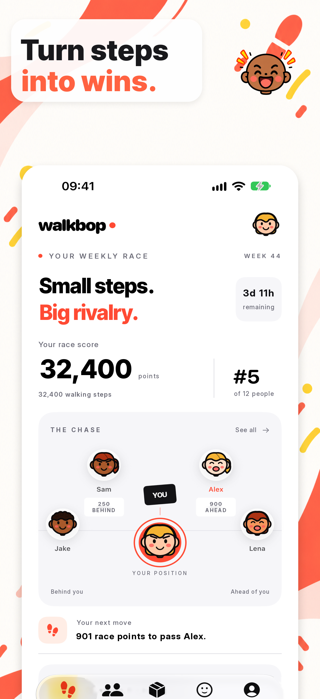
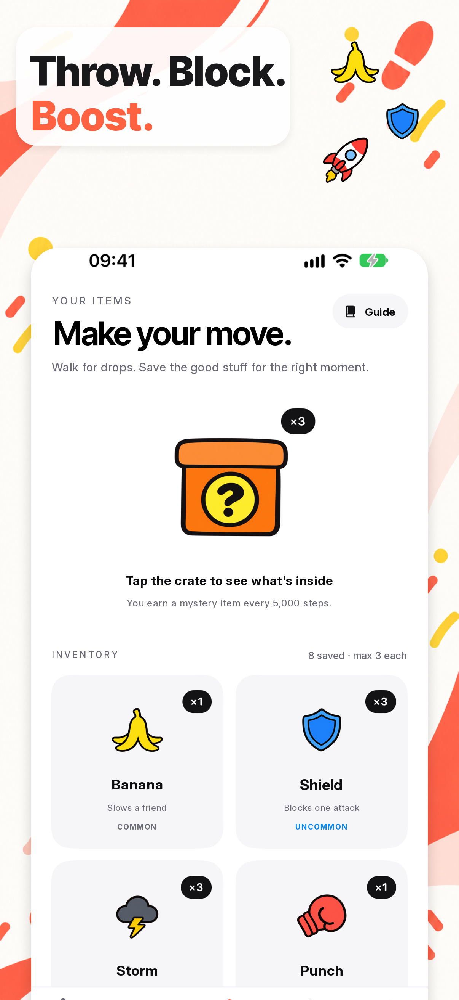
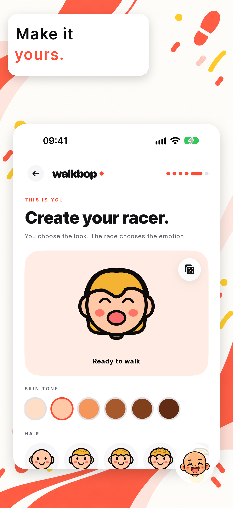
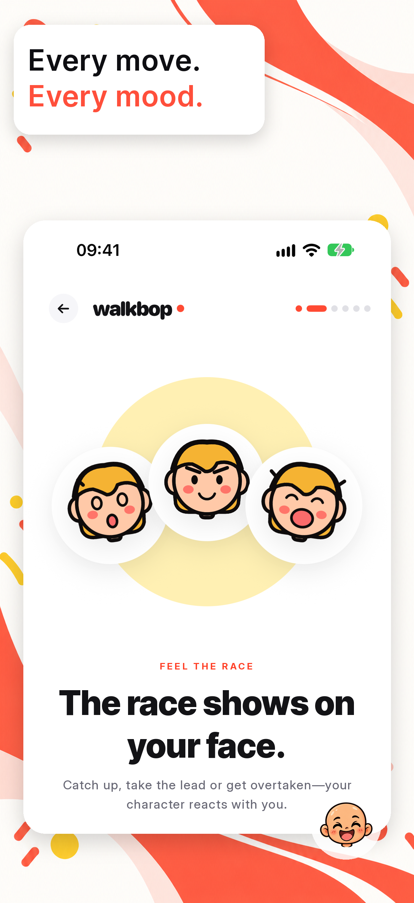
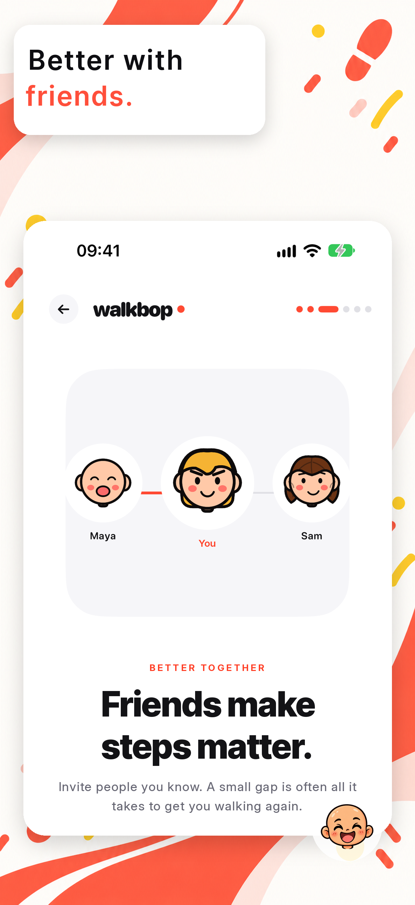

🍌
Slow a friend down.
A Banana can knock race points off a rival and turn a comfortable lead into a new chase.
 walkbop•
walkbop•
Weekly step races with friends
Your real steps become race points in a fresh weekly competition. Walk, climb the standings and make the group chat interesting again.

01 / THE WEEKLY RACE
WalkBop reads your weekly step total from Apple Health and turns it into race points. The leaderboard moves as your friends move, so a lunch walk can be a tactical decision.
The chase view keeps the race personal: see the friend just ahead, the points between you and what one more walk could change.

02 / THE TWIST
A Banana can knock race points off a rival and turn a comfortable lead into a new chase.
Keep a Shield ready when first place starts attracting the wrong kind of attention.
Open mystery crates earned by walking, save the items you find and play them when the timing feels right.

Every walk can unlock a surprise
The race is still powered by movement. Items add just enough chaos to keep a slow Tuesday from deciding the whole week.
03 / YOUR RACER
Choose the face, hair and look that feels like you. Your racer celebrates the good moments and wears the bad ones—because a close race should show on your face.



04 / BETTER TOGETHER
Invite the people you know with a private, single-use link. Every friend joins the same week-long story: small leads, surprise attacks and the final push before the reset.
05 / BUILT AROUND YOUR STEPS
WalkBop reads the step total needed to calculate your current weekly race score.
The app does not add to or alter the records stored in Apple Health.
The service receives your weekly total so positions and results can work across participating accounts.
THE START LINE IS GETTING CLOSER